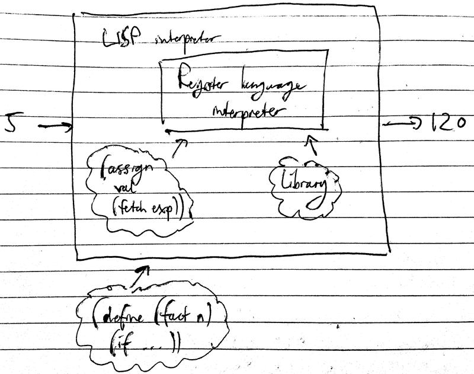
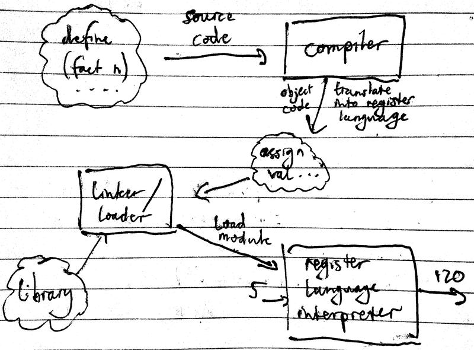

SICP 10a
Compilation
Table of Contents
1 Interpreter vs compiler

An interpreter configures itself to emulate a machine whose description is fed in. In essence, the general strategy of interpretation is to raise the machine to the level of the programs. Compilation is different. In compilation, the program is lowered to the language of the machine.

Compilers generally produce code which executes more efficiently, as an interpreter has to produce register operations that are general enough to execute any procedure, whereas a compiler only has to worry about producing a special bunch of register operations for the particular procedure selected for compilation.
Interpreters, which are essentially general purpose simulators, provide a nicer environment for debugging. Most LISPS may be both interpreted and compiled.
In the following compilers, compiled code and interpreted code may call each other; the compiler has exactly the same register conventions as the interpreter.
2 Dumb compiler
In a zeroth order compiler: take the evaluator, run over the code, and instead of executing, just save the execution for later.
Register operations in interpreting (f x)
19 lines in total.
(assign unev (operands (fetch exp))) (assign exp (operator (fetch exp))) (save continue) (save env) (save unev) (assign continue eval-args) (assign val (lookup-var-val (fetch exp) (fetch env))) (restore unev) (restore env) (assign fun (fetch val)) (save fun) (assign argl '()) ... apply-dispatch
The zeroth compiler runs the evaluator, and stashes away these operations
instead of actually executing them. For predicates, i.e. (if p a b), every
branch will have to be compiled since the predicate is not a foregone
conclusion.
(if p a b)
<code for p - result in val> branch if val is true to label 1 <code for b> goto next thing label 1 <code for a> goto next thing
Apart from stashing and branching, a zeroth order compiler is the same as an evaluator. Despite this, there is already an efficiency gain: an interpreter has to simultaneously analyse the code to decide what to do, as well as run the operation; compiled code only executes.
3 Less dumb compiler
How can this compiler be improved? Both exp and unev are superfluous, as
they are not registers of the actual machine; exp and unev are registers
for simulation. From the compiler's point of view, the values contained in
exp and unev are constants.
Also, many assignments to continue are irrelevant, as often continue simply
keeps track of where the evaluator analysis should continue. This is irrelevant
for compiled code.
The 19 lines of code can now be reduced to:
(save env)
(assign val
(lookup-var-val 'f (fetch env)))
(restore env)
(assign fun (fetch val))
(save fun)
(assign argl '())
(save argl)
(assign val
(lookup-var-val 'x (fetch env)))
(restore argl)
(assign argl
(cons (fetch val)
(fetch argl)))
(restore fun)
There is still space for improvement. A compiler can be more judicious with saving and restoring. An evluator has to be maximally pessimistic. A compiler does not need to be as careful as an evalutor.
Eliminating unnecessary stack operations:
(assign fun
(lookup-var-val 'f (fetch env)))
(assign val
(lookup-var-val 'x (fetch env)))
(assign argl (cons (fetch val) '()))
computation proceeds at apply-dispatch
For a more complicated expression, (f (y x) 1), watch the video lecture.
4 Implementation
So far we have seen what a compiler is supposed to do. Let's peer inside and see how these objectives are accomplished.
(op a1 a2)
// preserving env
{compile op; result in fun}
// preserving fun until apply-dispatch
// preserving env
{compile a1; result in val}
(assign (cons (fetch val) '()))
// preserving argl until assign
{compile a2; result in val}
(assign argl (cons (fetch val) (fetch argl)))
(go-to apply-dispatch)
The basic means of combination is to append code sequences.
append seq1 and seq2 preserving reg if seq needs reg and seq1 modifies reg: (save reg) <seq1> (restore reg) <seq2> otherwise: <seq1> <seq2>
A code sequence to a compiler looks like this:
<sequence of instructions; set of registers modified; set of registers needed>
Example:
<(assign r1 (fetch r2)); {r1}; {r2}>
Combining two sequences:
<s1; m1; n1> and <s2; m2; n2> <s1 and s2; m1 ∪ m2; n1 ∪ [n2-m1]>
So there's the basic structure of the compiler. The way you do register optimisations is you have some strategies for what needs to be preserved… That's the whole thing apart from thirty pages of detail in the book.